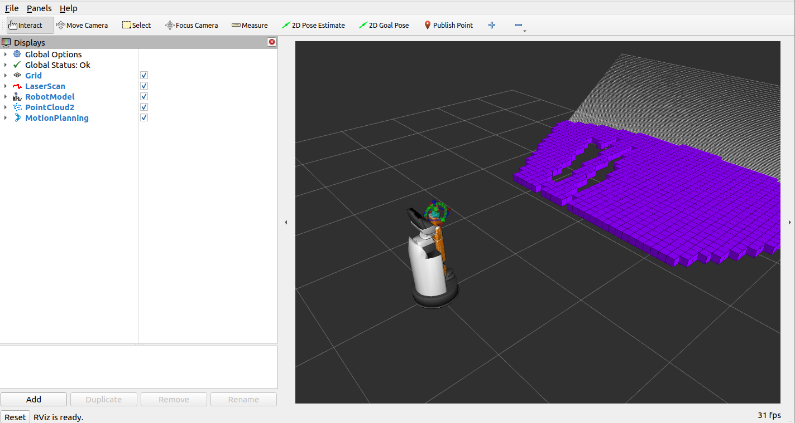
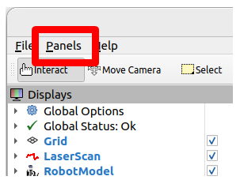
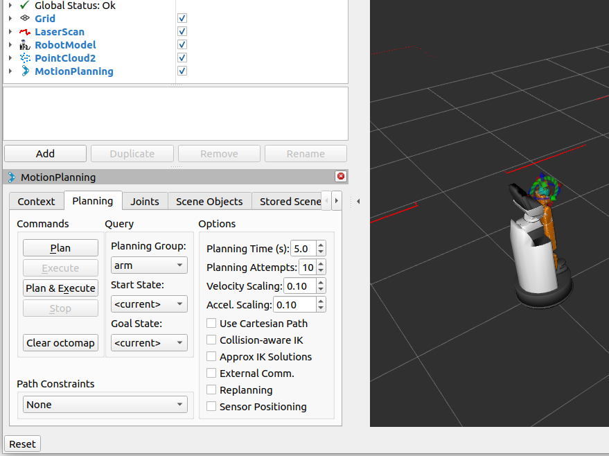
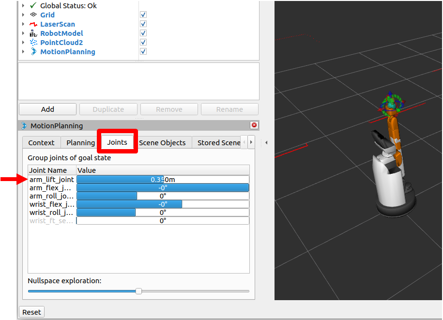
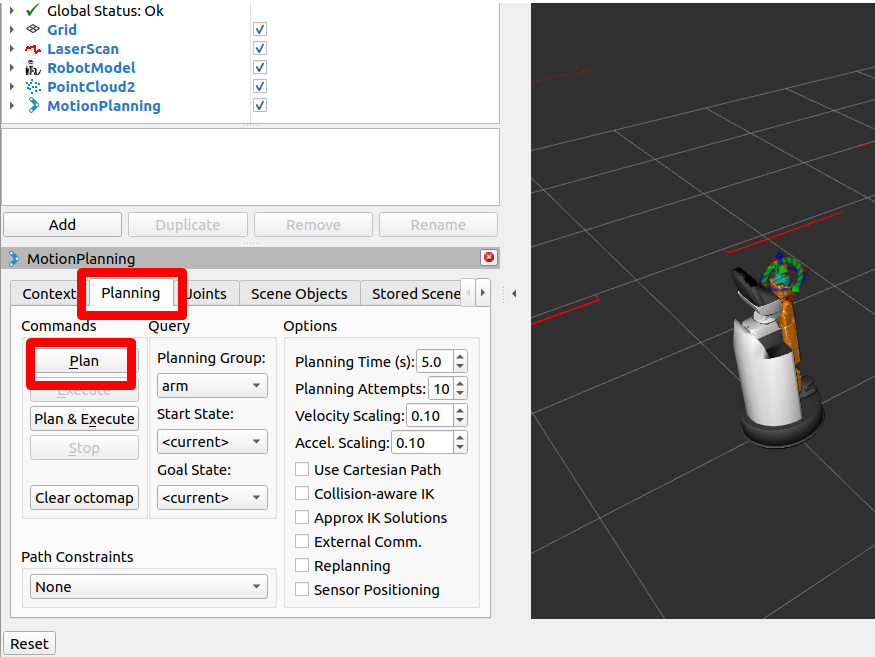
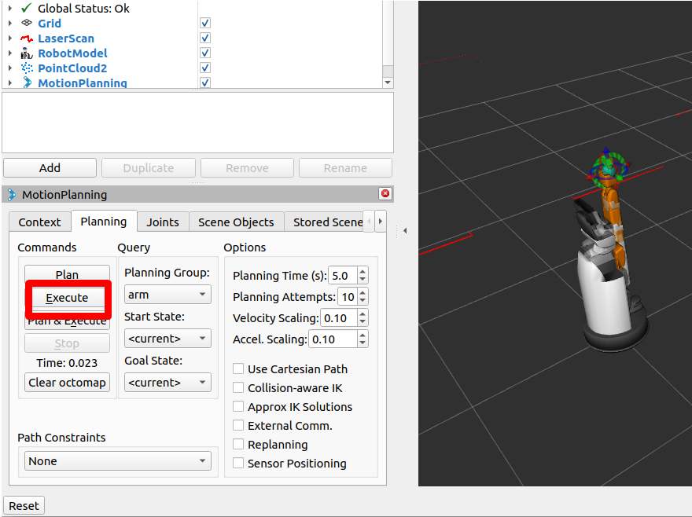
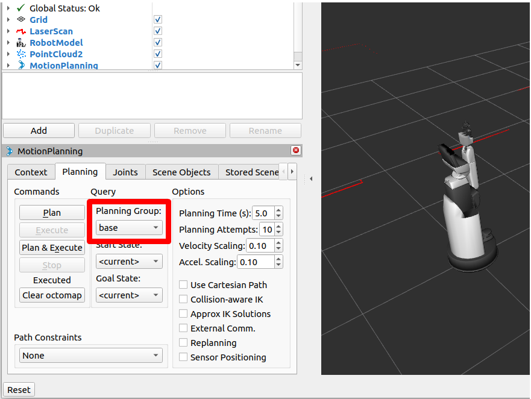
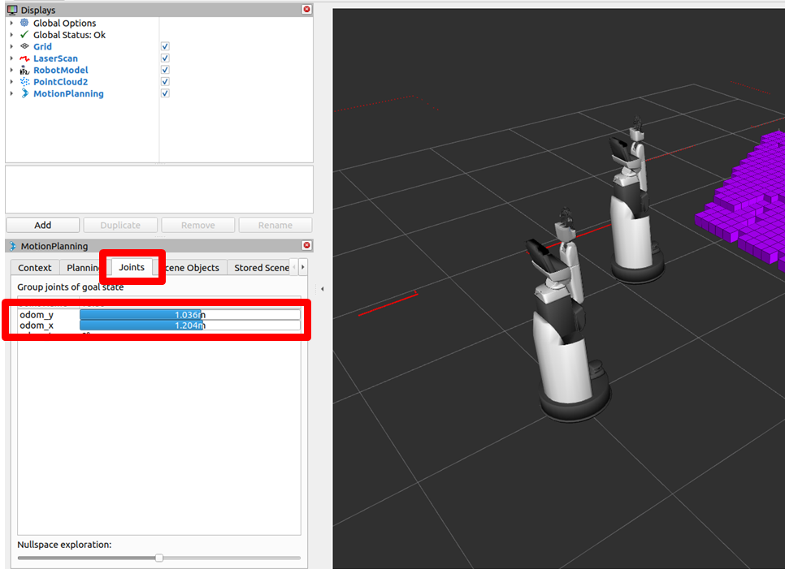
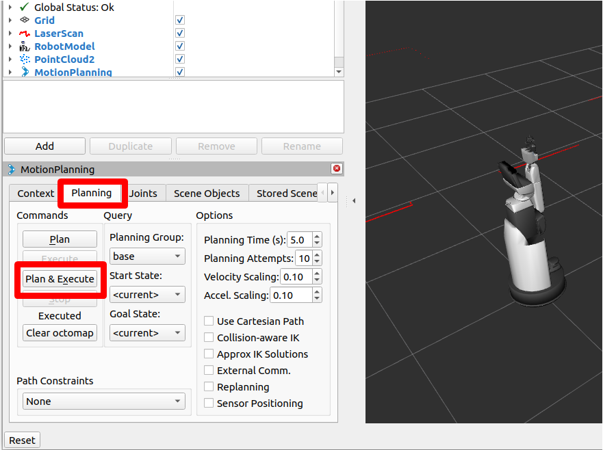
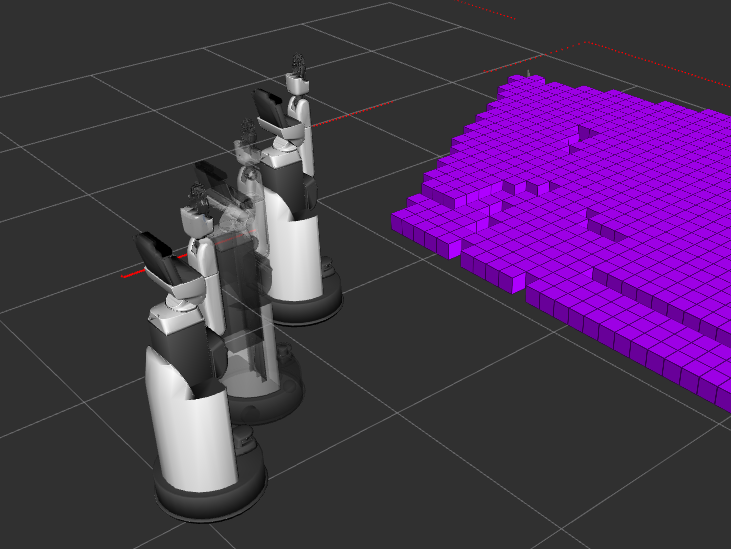

4.1. MoveIt2を使う#
ここでは、MoveIt2を使う方法について説明します。
なお、MoveIt2の仕様・詳細については、 MoveIt2公式ドキュメント をご確認ください。
4.1.1. ワークスペースの作成#
MoveIt2を使用するためのワークスペースを作成します。以下の手順を実施してください。
以下を実行し、ビルドに必要なツール類をインストールしてください。
$ sudo apt update $ sudo apt install -y python3-colcon-common-extensions python3-rosdep $ sudo rosdep init $ rosdep update
その後以下を実行し、ワークスペースの作成と必要なパッケージの配置、ビルドを行ってください。
$ source /opt/ros/<ROS_DISTRO>/setup.bash $ mkdir -p ~/hsr_ros2_ws/src && cd ~/hsr_ros2_ws/src $ git clone -b $ROS_DISTRO https://github.com/hsr-project/hsrb_moveit.git
$ cd ~/hsr_ros2_ws/ $ rosdep install --from-paths . -y --ignore-src $ colcon build --symlink-install --cmake-args -DCMAKE_BUILD_TYPE=Release $ source install/setup.bash
4.1.2. MoveIt2の起動#
以下の手順を実施して、MoveIt2を起動してください。
HSRの起動方法
以下を実行し、環境変数の設定を行ってください。 なお、
ROS_DOMAIN_IDは各自で設定してください。$ export ROS_DOMAIN_ID=XXX $ source /opt/ros/<ROS_DISTRO>/setup.bash
以下を実行し、シミュレータを起動してください。
$ cd ~/hsr_ros2_ws/ $ source install/setup.bash $ ros2 launch hsrb_gazebo_launch hsrb_empty_world.launch.py rviz:=false
MoveIt2の起動方法
以下を実行し、環境変数の設定を行ってください。 なお、
ROS_DOMAIN_IDには、シミュレータ起動時に設定した値をセットしてください。$ export ROS_DOMAIN_ID=XXX $ source /opt/ros/<ROS_DISTRO>/setup.bash
以下を実行し、MoveIt2を起動してください。
$ cd ~/hsr_ros2_ws/ $ source install/setup.bash $ ros2 launch hsrb_moveit_config hsrb_demo.launch.py use_sim_time:=true
以上を実行すると、以下のようなRVizの画面が表示されます。
{kind=link}

4.1.3. GUIでの操作#
GUIでMoveIt2を使い、HSRを操作する方法を説明します。
画面左上「Panels」を押し、「MotionPlanning」にチェックを入れてください。

チェックを入れると、図のような「MotionPlanning」タブが表示されます。

ここでは、試しに「arm_lift_joint」を動作させてみます。
「Joints」タブの「arm_lift_joint」のスライダーを右方向にスライドし、数値を上げてください。 目標姿勢が表示されます。

「Planning」タブの「Plan」を押してください。 RViz上では目標姿勢へ遷移する計画が確認できますが、ここではまだ実際に動作しません。

「Planning」タブの「Execute」を押してください。 ここで、実際に目標姿勢へ遷移するのが確認できます。

「Planning」タブの「Planning Group」を「arm」から「base」に変更します。

「Joints」タブの「odom_y」と「odom_x」のスライダーを右方向にスライドし、数値を上げてください。

今度は「Planning」タブの「Plan & Execute」を押してください。 目標姿勢へ遷移する計画と実際の遷移が同時に確認できます。


{kind=link}
{kind=link}
{kind=link}
{kind=link}
{kind=link}
{kind=link}
{kind=link}
{kind=link}
{kind=link}
4.1.4. サンプルプログラム#
サンプルプログラムの実行方法を説明します。
MoveIt2の起動 を参照してMoveIt2を起動してください。
サンプルプログラムを実行する手順は以下の通りです。
MoveIt2の起動 を参照し、環境変数の設定を行ってください。
以下を実行し、サンプルプログラムを実行してください。
なお、
<Example PROGRAM>には以降で説明するプログラム名を入れてください。$ cd ~/hsr_ros2_ws/ $ source install/setup.bash $ ros2 launch hsrb_moveit_config hsrb_example.launch.py use_sim_time:=true example_name:=<Example PROGRAM>
準備されているサンプルプログラムは以下の通りです。
プログラム名
説明
moveit_fk_demo
各関節軸に指令値を与え、HSRを動作させるサンプルプログラムです。
moveit_ik_demo
手先位置を目標値として与え、HSRを動作させるサンプルプログラムです。デフォルトの方法に加え、台車をできるだけ動かす方法と、台車をあまり動かさない方法の計3種類の指定方法を確認できます。
moveit_gripper_demo
位置制御によるハンドの開閉動作と、トルク制御によるハンドの割り込み動作を行うサンプルプログラムです。
moveit_constraints_demo
手先の位置姿勢に拘束条件を設定するサンプルプログラムです。拘束条件を設定した場合と設定しない場合の動作の違いを確認できます。